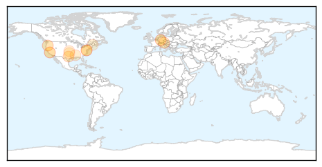

Measles
30-Day Web Trend
0 alerts, 0 warnings

30-Day Twitter Trend
0 alerts, 0 warnings

Article Locations
Article Confidences

Top Articles:
- 0.968
- Rubella Case Confirmed in Tarrant County
- 0.923
- More Maine families are skipping or delaying childhood vaccines
- 0.922
- Measles outbreak reported in Ibanda
- 0.883
- Vaccination Rates in US Are High
- 0.788
- Call for EU member states to take action on 'vaccine hesitancy'
- 0.742
- Texas Christian University student confirmed Rubella positive
- 0.635
- US vaccination rates high, but pockets of unvaccinated pose risk
- 0.576
- High vaccination rates help protect communities
- 0.538
- August is National Immunization Awareness Month - DailyPress.net
- 0.528
- In surprising turn, Maine toddlers had nation's highest vaccination rate in 2014
- 0.523
- Fewer Maine parents rejecting vaccines — Health — Bangor Daily News — BDN Maine
- 0.515
- Unvaccinated Children Pose Public Health Threat
- 0.501
- CDC: Kindergarten Vax Rate High, But Not High Enough
Top Tweets:
-
No tweets found for Aug 28, 2015
Hepatitis
30-Day Web Trend
0 alerts, 0 warnings

30-Day Twitter Trend
0 alerts, 0 warnings

Article Locations

Article Confidences

Top Articles:
- 0.658
- New Delaware hepatitis C campaign will target boomers, IV drug users
- 0.644
- AbbVie : Egyptian health ministry approves new hepatitis C drug
- 0.617
- Hepatitis C: A Silent Killer In The United States, Patients Limited Access To HCV Drugs
- 0.604
- Needle exchanges unlikely for Northwest Indiana
- 0.571
- Researchers identify new virus that plays role in rare type of liver cancer
- 0.565
- Ziagen Tablets (Abacavir) Drug
Top Tweets:
-
No tweets found for Aug 28, 2015